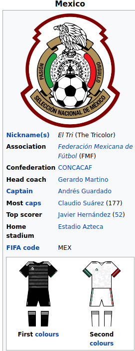

Mexico national football team
Mexico has qualified to sixteen World Cups and has qualified consecutively since 1994, making it one of six countries to do so.
The Mexico national team, along with Brazil are the only two nations to make it out of the group stage over
the last seven World Cups.[4] Mexico played France in the first match of the first World Cup on 13 July 1930.
Mexico's best progression in World Cups has been reaching the quarter-finals in both the 1970 and 1986 World Cups,
both of which were staged on Mexican soil.